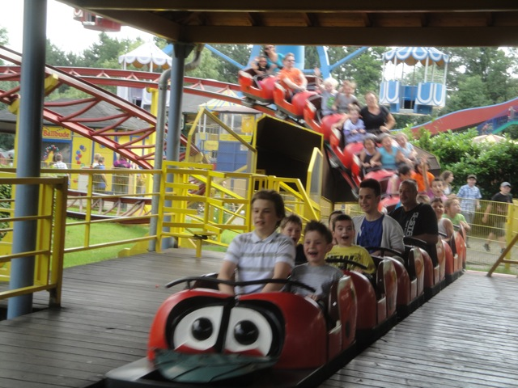
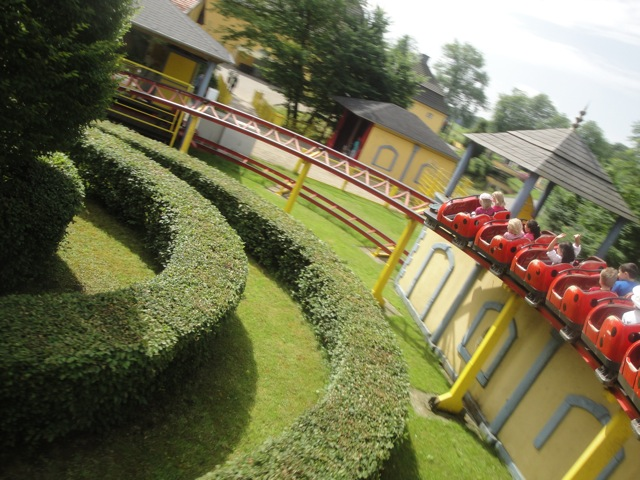

TPR's Mega Europe Trip
Rome Rome Credit Whoring Rainbow Magicland Fiabilandia Mirabilandia
Movieland Studios Gardaland Walygator Parc Holiday Park Europa Park
Fort Fun
Heide Park
Schlossbeck
Movie Park Germany
Phantasialand
Parc Asterix Disneyland Paris
Another day on the trip, another park to visit.
Today, we're starting out our morning at Schlossbeck.
Schlossbeck is a very bizzare park in the sense that its far more of a playground than an actual theme park.
I'm riding off on the horse to my happy ending, oh wait, I'm on a TPR Trip. My happy ending is already here.

All right. Time for us to get the only credit there is to get in this park.
 With the fact that they only have this little Tivoli as their only coaster, you'd think that this place was nothing more than just a credit whoring stop.
With the fact that they only have this little Tivoli as their only coaster, you'd think that this place was nothing more than just a credit whoring stop.

Trust me, this is the most boring thing here. We're just getting the credit out of the way so we can get to all the good stuff. =)
Now that we've got the credit out of the way, we can focus on the real star attraction of the park. Boat Jumping.
What is Boat Jumping, you may be asking? Well, first you get pulled up this spike backwards like a Boomerang...
Then you drop all the way down and fly off the track.
And SPLASH!!!!! Land straight into the water.
Among the other bat-sh*t insane things they have here, they have a Vertical Slide.
I really want to see these things popping up at more playgrounds.
Make sure you don't run out of room and slide onto the main path. ;)
 Continuing the tradtion of crazy bizzare rides at Schlossbeck, we tried out this ride they call the Luna Loop.
Continuing the tradtion of crazy bizzare rides at Schlossbeck, we tried out this ride they call the Luna Loop.
You just get inside, go around on a track that just goes in a circle while you control the flipping.
 New at Schlossbeck were these Wet'N'Dry Slides.
New at Schlossbeck were these Wet'N'Dry Slides.
They weren't that crazy, but they were a lot of fun.
Now this self operated Zipline on the other hand, yeah. Its pretty crazy.
"Look at me darling!!! I'm on the Zipline!!!"
 This haunted house wasan't that scary, though it was certainly...intersting.
This haunted house wasan't that scary, though it was certainly...intersting.
Now if you want creepy, you have to see these Nursery Animals. Their bizzare singing of some childrens nusery rhyme is just so creepy. The picture doesn't do it justice. I'll have to show you the video to show you just what I'm talking about.
"Anyone else wanna hop on the Tampon Swing with me?"
Dude, this place is incredible. Why can't any of our parks in Ventura be more like Schlossbeck?
"I really don't like how fast we're spinning right now. I feel like something is gonna happen soon."
DAN IS DOWN!!!!! I REPEAT!!!! DAN IS DOWN!!!!!!!
"THIS THING IS EVIL!!!! I HATE YOU GUYS SO MUCH!!!!!!!"
Yeah, I think another ride on the Boat Jump is in order.
Umm, guys....I think we're breaking the rules here.
Yeah. Boat Jumping is freaking awesome.
"Exactly how long do I have here before I drop?"
"OH SH*T!!!!!!"
Why am I not surprised Cliff.
Movie Park Germany
Home